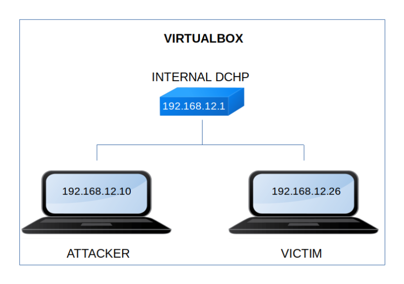

Grotesque 3.0.1
▸ Grotesque 3.0.1
▸ 1. Scan Network
▸ 2. Finding Services and Ports
▸ 3. Enumerate
▸ 3.1 Create MD5s list
▸ 3.2 LFI
▸ 4. Explotiation
▸ 4.1 Getting password with Hydra (First flag)
▸ 4.2 pspy2 – Unprivileged Linux Process Snooping
▸ 4.3 Enumerate SMB
▸ 4.4 Creating a reverse shell
▸ 5. Privilege Escalation
▸ 5.1 Getting the last flag
Difficulty: Medium.
Flag: 2 flags.
Learning:
• Reconnaissance
Scan Network
Find services
• Enumerate
Create MD5s list
LFI
• Exploitation
Getting password with Hydra
Unprivileged Linux Process Snooping with pspy2
Enumerate SMB
Create a reverse shell
• Privilege Escalation
Get root shell
• Download (Mirror): https://download.vulnhub.com/grotesque/grotesque3.zip
• Download (Torrent): https://download.vulnhub.com/grotesque/grotesque3.zip.torrent
Install the machine on VirtualBox:
1. Download the file.
2. On Virtualbox choose File->Import Appliance.
3. Select the file “ova”.
4. Accept to import.


Watch your Machine IP.
$ ifconfig
Output:

Diagram
